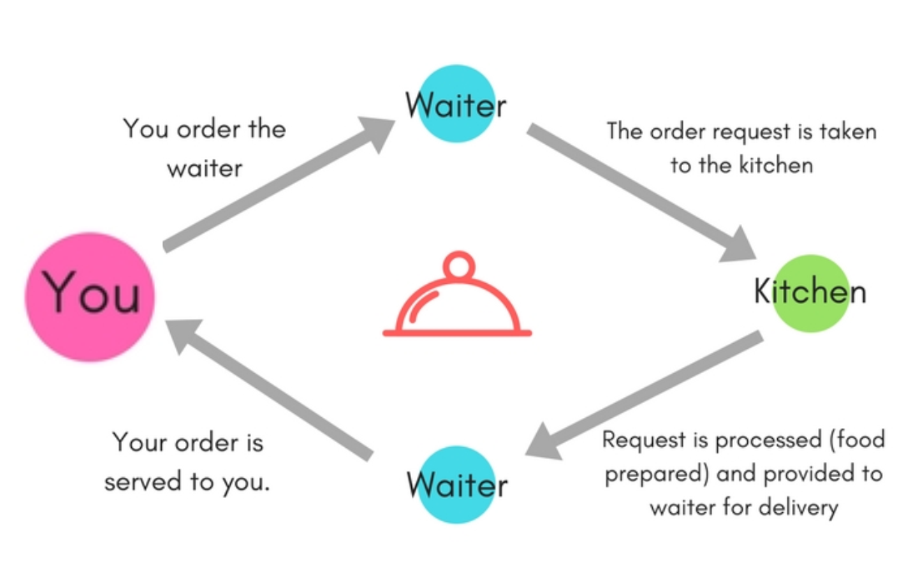

Waiter Analogy
This example was taken from this rigor blog.

At a restaurant, you are handed a menu of items that you can order. You can then add specific instructions about how you want those items prepared.
Once you’ve made your decisions, you give your order to the waiter, saying, “I want the filet mignon, medium-rare, with a side of creamed spinach and a fully-loaded baked potato with no chives.”
The waiter writes down your order and delivers it to the kitchen team, who prepares your meal to your exact specifications.
Once your meal is prepared, the waiter picks it up from the kitchen and serves it to you at your table. You review it to make sure that you have received everything you requested – and then you eat.
The waiter’s role in this scenario closely mirrors the role of an API in the delivery of data on the modern web. Like a waiter, an API:
- Receives a set of instructions (a request) from a source (such as an application or engineer)
- Takes that request to the database
- Fetches the requested data or facilitates a set of actions
- Returns a response to the source